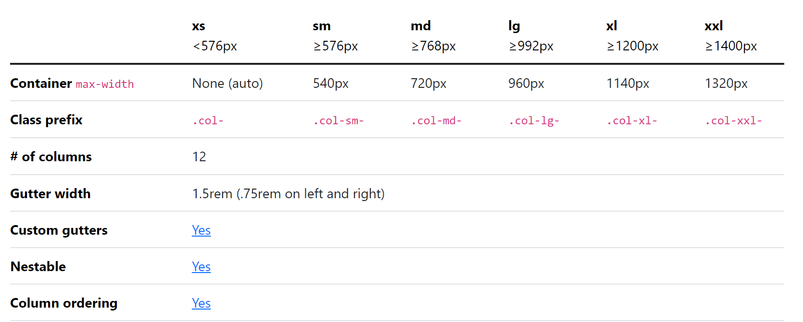

Responsive Web Design
Pengenalan Responsive Web Design
Desain Web Responsif (Responsive Web Design)merupakan penggunaan HTML dan CSS untuk dapat mengubah ukuran, menyembunyikan, mengecilkan, atau memperbesar situs web secara otomatis, agar dapat terlihat bagus pada semua perangkat (desktop, tablet, dan handphone).
pada dokumen HTML seperti berikut:
<meta name="viewport" content="width=device-width, initial-scale=1.0">Penambahan elemen digunakan untuk mengatur viewport pada dokumen HTML sehingga dapat tampil lintas perangkat. Pada penambahan elemen
tersebut juga akan memberikan instruksi ke web browser dalam mengatur dimensi dan skala halaman web.
Responsive pada Image
Penerapan responsive dapat diberlakukan juga pada image dengan menambahkan atribut width dengan nilai 100%.
<img src="images.jpg" style="width:100%;">Responsive pada Text
Responsive pada text dapat diterapkan dengan menggunakan unit “vw”, yang berarti “viewport width” atau “lebar viewport”.Viewport adalah ukuran jendela browser. 1 vw adalah 1% dari lebar viewport. Jika viewport lebar 50cm, 1vw adalah 0,5cm.
<h1 style="font-size:10vw">Hello World</h1>Responsive Web Design Framework (Bootstrap)
Bootstrap merupakan HTML, CSS dan Javascript framework paling popular untuk mengambangkan responsive web design yang mengutamakan tampilan mobile (mobile first) Bootstrap dapat diunduh secara gratis pada laman https://getbootstrap.com/. Sampai saat modul ini dibuat versi terkhir adalah Bootstrap v5.3.
Mengapa menggunakan Bootstrap?
Banyak keuntungan dan kemudahan yang diberikan Bootstrap diantaranya adalah:
Berikut adalah beberapa penjelasan mengenai Bootstrap:
Responsif: Salah satu fitur utama Bootstrap adalah kemampuannya untuk menghasilkan tampilan yang responsif secara otomatis. Dengan menggunakan kelas CSS yang telah disediakan oleh Bootstrap, elemen-elemen halaman web dapat menyesuaikan diri dengan baik pada berbagai perangkat dan ukuran layar, mulai dari desktop hingga perangkat mobile.
Grid System: Bootstrap menyediakan sistem grid yang fleksibel untuk membagi layout halaman web menjadi kolom-kolom yang responsif. Grid system ini memungkinkan pengaturan layout yang mudah dan dapat diatur untuk menciptakan tampilan yang rapi dan terstruktur pada berbagai perangkat.
Komponen Siap Pakai: Bootstrap menyediakan beragam komponen UI siap pakai seperti tombol, navigasi, formulir, jumbotron, kartu, jendela modal, dan banyak lagi. Komponen ini telah dirancang dengan baik dan dapat langsung digunakan dalam proyek tanpa perlu memikirkan desain atau gaya dasar, menghemat waktu dan usaha pengembangan.
Gaya dan Tema: Bootstrap memiliki gaya dan tema default yang estetis dan modern. Selain itu, Bootstrap juga menyediakan beragam tema kustom yang dapat diterapkan dengan mudah untuk memberikan tampilan yang unik dan sesuai dengan kebutuhan proyek Anda. Anda juga dapat menyesuaikan gaya dan tema Bootstrap sesuai dengan preferensi Anda sendiri.
Kompatibilitas Browser: Bootstrap dirancang untuk mendukung sebagian besar browser modern. Ini berarti tampilan dan fungsionalitas situs web yang dibangun dengan menggunakan Bootstrap akan konsisten dan berfungsi dengan baik di berbagai browser yang umum digunakan.
Dokumentasi dan Komunitas: Bootstrap memiliki dokumentasi yang sangat baik, lengkap dengan contoh-contoh kode dan penjelasan yang rinci. Selain itu, karena popularitasnya, Bootstrap memiliki komunitas pengembang yang besar dan aktif, yang dapat memberikan dukungan dan sumber daya yang berguna untuk menjawab pertanyaan, memecahkan masalah, dan berbagi pengalaman.
HTML5
Penambahan doctype dilakukan untuk menetapkan dokumen HTML sebagai HTML versi 5 (HTML5), agar dapat menggunakan elemen-elemen HTML5 dan properti CSS Bootstrap. Sebagai contohnya pada script berikut.
<!DOCTYPE html>
<html>
...
</html>Jika menggunakan Text Editor Visual Studio Code, ketika mengetikan html di awal kode maka akan muncul snipets yang memunculkan beberapa pilihan template kode

Bootstrap Grid System
Pada Bootstrap menerapkan grid system dengan 12 (dua belas) kolom pada setiap halaman. Jika kita tidak menginginkan layoutmenggunakan ke-12 kolom, kita bisa mengelompokkan kolom bersama untuk membuat kolom yang lebih lebar. Sebagai contoh gambaran dari grid system dengan 12 kolom ditampilkan seperti pada gambar di bawah ini.

Sistem grid pada bootstrap dapat menyesuaikan terhadap enam keadaan atau ukuran diantaranya adalah :
- Ekstra kecil atau extra small (xs)
- Kecil atau small (sm)
- Sedang atau medium (md)
- Besar atau large (lg)
- Ekstra besar atau extra large (xl)
- Ekstra ekstra besar atau extra extra large (xxl)
